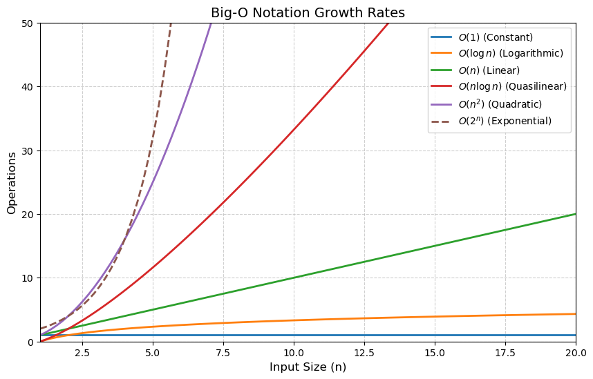

def get_first_element(arr):
return arr[0] # Always takes constant time.What is Big-O Notation:
Big-O notation describes how the runtime or the space requirements of an algorithm Grow Relative to the input size N. In othe words how the algorithm perform as the n becomes very large.
Classes of Big-O Notation:
1. Constant Time: ( O(1) ) - Description: The runtime does not depend on the size of the input (( n )). - Example Use Cases: - Accessing an element in an array by its index. - Assigning a value to a variable. - Why It’s Efficient: The algorithm performs a fixed number of operations, no matter how large the input is.
2. Logarithmic Time: O(logn)
- Description: The runtime increases logarithmically as the input size grows. Often seen in divide-and-conquer algorithms.
- Example Use Cases:
- Binary search.
- Efficient data structures like binary search trees.
- Why It’s Efficient: The input size is repeatedly divided by 2 (or another factor), so the algorithm performs significantly fewer operations as ( n ) grows.
- Example Code: Binary Search:
def binary_search(arr, target):
left, right = 0, len(arr) - 1
while left <= right:
mid = (left + right) // 2
if arr[mid] == target:
return mid
elif arr[mid] < target:
left = mid + 1
else:
right = mid - 1
return 'NoT Found!'array = [1, 2, 3, 4, 5, 6, 7, 8, 9]
binary_search(array, 99)'NoT Found!'3. Linear Time: ( O(n) )
- Description: The runtime increases proportionally with the input size (( n )).
- Example Use Cases:
- Iterating through an array or list.
- Searching for an element in an unsorted list.
- Why It’s Common: Many real-world algorithms involve processing each element once.
- Example Code: Linear Search:
def find_element(arr, target):
for i in range(len(arr)):
if arr[i] == target:
return i
return -14. Quasilinear Time: ( O(n n) )
- Description: Often seen in efficient sorting algorithms, where the input is processed ( n ) times with a logarithmic component.
- Example Use Cases:
- Merge sort, quicksort (average case).
- Heap sort.
- Why It’s Efficient for Sorting: Dividing and merging elements (logarithmic factor) is combined with processing all elements (( n )).
Example Code: Merge Sort:
def merge_sort(arr):
if len(arr) <= 1:
return arr
mid = len(arr) // 2
left = merge_sort(arr[:mid])
right = merge_sort(arr[mid:])
return merge(left, right)
def merge(left, right):
result = []
while left and right:
if left[0] < right[0]:
result.append(left.pop(0))
else:
result.append(right.pop(0))
result.extend(left or right)
return result
5. Quadratic Time: ( O(n^2) )
- Description: Runtime grows quadratically with the input size. Often caused by nested loops.
- Example Use Cases:
- Comparing every pair of elements (e.g., bubble sort).
- Brute-force solutions.
- Why It’s Inefficient: For large ( n ), the runtime grows very quickly.
Example Code: Bubble Sort:
def bubble_sort(arr):
n = len(arr)
for i in range(n):
for j in range(0, n-i-1):
if arr[j] > arr[j+1]:
arr[j], arr[j+1] = arr[j+1], arr[j]
return arr6. Exponential Time: ( O(2^n) )
- Description: Runtime doubles with every additional input. This is usually seen in recursive algorithms solving combinatorial problems.
- Example Use Cases:
- Generating all subsets of a set.
- Recursive solutions without optimization (e.g., Fibonacci numbers).
- Why It’s Expensive: Very inefficient for large ( n ); often impractical.
Example Code: Recursive Fibonacci:
def fibonacci(n):
if n <= 1:
return n
return fibonacci(n-1) + fibonacci(n-2)7. Factorial Time: ( O(n!) )
- Description: Runtime grows faster than any other common complexity. Seen in brute-force solutions to permutation or combination problems.
- Example Use Cases:
- Traveling Salesman Problem (TSP) via brute force.
- Why It’s Impractical: Even small inputs become infeasible (e.g., ( n=10 ), ( 10! = 3,628,800 )).
Example Code: Brute-Force Permutations:
from itertools import permutations
def all_permutations(arr):
return list(permutations(arr))Summary Table
| Big-O | Example Algorithm | Suitability |
|---|---|---|
| ( O(1) ) | Array access, hash table lookup | Excellent. |
| ( O(n) ) | Binary search, tree operations | Very efficient. |
| ( O(n) ) | Linear search, one loop | Efficient for large ( n ). |
| ( O(n n) ) | Merge sort, quicksort | Good for large ( n ). |
| ( O(n^2) ) | Nested loops, bubble sort | Avoid if possible. |
| ( O(2^n) ) | Recursive subset generation | Impractical for large ( n ). |
| ( O(n!) ) | Brute-force permutations | Rarely practical. |
import matplotlib.pyplot as plt
import numpy as np
# Define input size range
n = np.linspace(1, 20, 100)
# Define Big-O functions
O_1 = np.ones_like(n)
O_log_n = np.log2(n)
O_n = n
O_n_log_n = n * np.log2(n)
O_n2 = n ** 2
O_2n = 2 ** n
# Create a figure
plt.figure(figsize=(10, 6))
# Plot each Big-O function
plt.plot(n, O_1, label=r"$O(1)$ (Constant)", linewidth=2)
plt.plot(n, O_log_n, label=r"$O(\log n)$ (Logarithmic)", linewidth=2)
plt.plot(n, O_n, label=r"$O(n)$ (Linear)", linewidth=2)
plt.plot(n, O_n_log_n, label=r"$O(n \log n)$ (Quasilinear)", linewidth=2)
plt.plot(n, O_n2, label=r"$O(n^2)$ (Quadratic)", linewidth=2)
plt.plot(n, O_2n, label=r"$O(2^n)$ (Exponential)", linewidth=2, linestyle="dashed")
# Customize the plot
plt.ylim(0, 50) # Focus on a manageable y-axis range
plt.xlim(1, 20) # Show for input size 1 to 20
plt.xlabel("Input Size (n)", fontsize=12)
plt.ylabel("Operations", fontsize=12)
plt.title("Big-O Notation Growth Rates", fontsize=14)
plt.legend(fontsize=10)
plt.grid(True, linestyle="--", alpha=0.6)
# Show the plot
plt.show()